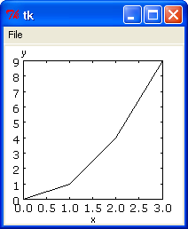
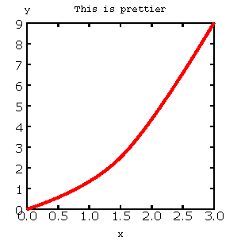
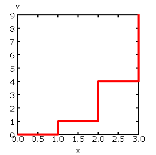
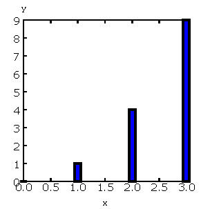
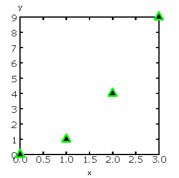
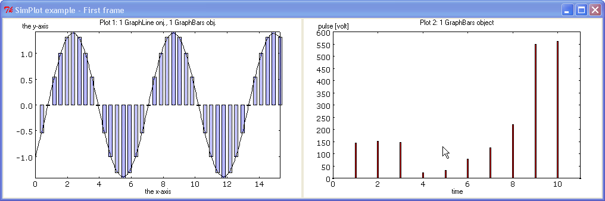
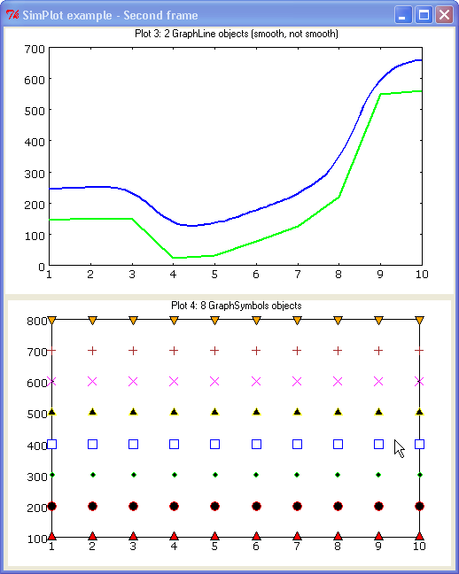
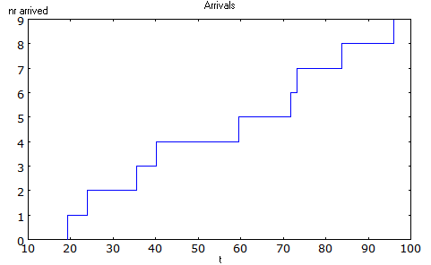
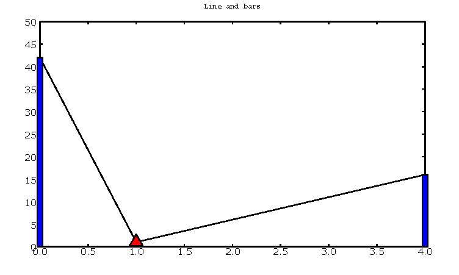

SimPlot Manual¶
- Authors
Klaus Muller <Muller@users.sourceforge.net>
- SimPy release
2.3.1
- Web-site
- Python-Version
2.6 and later
- Date
December 2011
Contents
The SimPlot plotting library has been developed for SimPy users so that they can produce, view and print simple plots, without having to download and install any other software package.
This manual is aimed at the SimPy applications programmer. It describes the capabilities of SimPlot and its programming interface.
There are several more elaborate Open Source plotting packages downloadable from the Internet which can be used from Python and therefore from SimPy. SimPlot is the “quick and dirty”, out-of-the-box plotting package for SimPy. If you need more complex plots or publication-quality graphics, consider using e.g. Matplotlib ( <http://matplotlib.sourceforge.net/>_ ).
Introduction¶
SimPlot is a basic plotting package based on Tk/Tkinter and designed for use with SimPy. It has been developed from an Open Source plotting package published in John E. Grayson’s excellent book ‘Python and Tkinter Programming’ (ISBN 1-884777-81-3) which in turn was derived from Konrad Hinsen’s graph widget for NumPy (Numerical Python).
SimPlot provides for the generation, viewing and Postscript output of a variety of plot types by SimPy programs. The data series of SimPy Monitor instances can be plotted automatically.
SimPlot requires Tk/Tkinter to be installed (for all major operating systems on which Python runs, the Python installation already includes the installation of Tk/Tkinter, so no additional download or installation is required). Test whether Tk/Tkinter is installed by running ‘import Tkinter’ on the Python interpreter command line. If you don’t get an error message, it is.
To write SimPlot-based programs, only a very rudimentary understanding of Tk/Tkinter is required. This manual does not attempt to teach Tk/Tkinter!
Plotting with SimPlot - an overview¶
Plot types and capabilities¶
A simple plot program using SimPlot basically looks like:
# Prog1.py
from SimPy.SimPlot import *
plt=SimPlot()
plt.plotLine([[0,0],[1,1],[2,4],[3,9]])
plt.mainloop()
When running this program, the resulting output on Windows is (the outside frame will look different on other platforms):

The program shows the basic structure of any program using SimPlot:
Line 2 imports the plotting module,
Line 3 creates and instance of the plotting class,
Line 4 plots a line in an x/y coordinate system,
Line 5 starts the main loop of Tk.
The frame also shows a ‘File’ menu item (when clicked, it offers a submenu item ‘Postscript’ which allows saving the plot to a Postscript file.
Method plotline has many name parameters with default values. Here is an example showing some of them (they will all be discussed further down in this manual:
# Prog2.py
from SimPy.SimPlot import *
plt=SimPlot()
plt.plotLine([[0,0],[1,1],[2,4],[3,9]],title="This is prettier",
color="red",width=2,smooth=True)
plt.mainloop()
This produces the following plot (the outside frame is not shown):

The plot now has a title and the curve is red, wider and smooth.
In addition to line plots, there are three other plot-types available in SimPlot, namely stepped line plots, bar charts, and scatter diagrams.
Here are examples of each. First, the stepped line plot:
# Prog3.py
from SimPy.SimPlot import *
plt=SimPlot()
plt.plotStep([[0,0],[1,1],[2,4],[3,9]],
color="red",width=2)
plt.mainloop()
which produces:

A bar chart program:
# Prog4.py
from SimPy.SimPlot import *
plt=SimPlot()
plt.plotBars([[0,0],[1,1],[2,4],[3,9]],
color="blue",width=2)
plt.mainloop()
which results in:

And finally, a scatter diagram:
# Prog5.py
from SimPy.SimPlot import *
plt=SimPlot()
plt.plotScatter([[0,0],[1,1],[2,4],[3,9]],
color="green",size=2,marker='triangle')
plt.mainloop()
and its output:

With a bit more involved programming, it is also possible to have several plots in one diagram and to have several diagrams in one Frame (just execute SimPlot.py to get these plots):


Note: In future versions of SimPlot, this part of the API will also be simplified so that it will require significantly less coding.
Plotting Monitor instances¶
Class Monitor is the prime data collection tool for SimPy simulations. SimPlot therefore caters for easy plotting from Monitor intances.
Here is an example of a simple simulation using a Monitor:
# Monitorplot.py
from __future__ import generators
from SimPy.Simulation import *
from SimPy.Monitor import *
from SimPy.SimPlot import *
class Source(Process):
def __init__(self,monitor):
Process.__init__(self)
self.moni=monitor
self.arrived=0
def arrivalGenerator(self):
while True:
yield hold,self,uniform(0,20)
self.arrived+=1
self.moni.observe(self.arrived)
initialize()
moni=Monitor(name="Arrivals",ylab="nr arrived")
s=Source(moni)
activate(s,s.arrivalGenerator())
simulate(until=100)
plt=SimPlot()
plt.plotStep(moni,color='blue')
plt.mainloop()
This produces:

Simple plotting API¶
Overview¶
A SimPlot application program has the following structure:
instantiation of the SimPlot class
call of one or more plotting methods
call to the SimPlot instance’s mainloop method
SimPlot exposes plotting methods at two levels, a simple API with limited capabilities but ease of use, and an advanced API with SimPlot’s full capabilities, but with more involved, verbose programming.
This section deals with the simple API.
SimPlot¶
- class SimPlot¶
This class provides the plotting capabilities.
plotLine¶
- classmethod SimPlot.plotLine(values[, optional parameters])¶
Generates a line plot from a list of tuples (or lists) or from a Monitor (any instance which has the attributes ‘name’, ‘tlab’, ‘ylab’).
- Parameters
values (list or Monitor) – (mandatory) a list of two-element lists (or tuples), or a Monitor instance (any instance which has the attributes ‘name’, ‘tlab’, ‘ylab’)
windowsize – the plotting window size in pixels (tuple); default: (500,300)
title (string) – the plot title ; if values is a Monitor, Monitor name is used if no title given
width (integer or floating point) – line drawing width, default: 1
color (Tkinter colour type) – line colour; default: ‘black’
smooth (boolean) – if True, makes line smooth; default: “True”
background (Tkinter colour type) – colour of plot background; default: ‘white’
xlab (string) – ** : label on x-axis of plot; if values is a Monitor, Monitor tlab is taken; default: ‘x’
ylab – label on y-axis of plot (string); if values is a Monitor, Monitor ylab is taken; default: ‘y’
xaxis – layout of x-axis (None = omit x-axis; ‘automatic’ = make x-axis at least long enough to include all x-values, using round values; ‘minimal’ = have x-axis go exactly from minimal to maximal x-value provided; tuple (xlow,xhigh) = have x-axis go from xlow to xhigh); default: ‘automatic’
yaxis – layout of y-axis (None = omit y-axis; ‘automatic’ = make y-axis at least long enough to include all y-values, using round values; ‘minimal’ = have y-axis go exactly from minimal to maximal y-value provided; tuple (ylow,yhigh) = have y-axis go from ylow to yhigh); default: ‘automatic’
- Return type
Reference to GraphBase object which contains the plot.
plotStep¶
- classmethod SimPlot.plotStep(values[, optional parameters])¶
Generates a step plot from a list of tuples (or lists) or from a Monitor (any instance which has the attributes ‘name’, ‘tlab’, ‘ylab’). A horizontal line is drawn at a y-value until y changes, creating a step effect.
<variable> = <SimPlotInstance>.plotStep(values[,optional parameters])
- param values
(mandatory) a list of two-element lists (or tuples), or a Monitor instance (any instance which has the attributes ‘name’, ‘tlab’, ‘ylab’)
- Optional parameters with defaults:
windowsize=(500,300), : the plotting window size in pixels (tuple)
title=”” : the plot title (string); if values is a Monitor, Monitor name is used if no title given
width=1 : line drawing width (integer or floating point)
color=’black’ : line colour (Tkinter colour type; see section on Colours in SimPlot)
background=’white’ : colour of plot background (Tkinter colour type; see section on Colours in SimPlot)
xlab=’x’ : label on x-axis of plot (string); if values is a Monitor, Monitor tlab is taken
ylab=’y’ : label on y-axis of plot (string); if values is a Monitor, Monitor ylab is taken
xaxis=’automatic’ : layout of x-axis (None = omit x-axis; ‘automatic’ = make x-axis at least long enough to include all x-values, using round values; ‘minimal’ = have x-axis go exactly from minimal to maximal x-value provided; tuple (xlow,xhigh) = have x-axis go from xlow to xhigh)
yaxis=’automatic’ : layout of y-axis (None = omit y-axis; ‘automatic’ = make y-axis at least long enough to include all y-values, using round values; ‘minimal’ = have y-axis go exactly from minimal to maximal y-value provided; tuple (ylow,yhigh) = have y-axis go from ylow to yhigh)
- Return value:
Reference to GraphBase object which contains the plot.
plotBars¶
Generates a bar chart plot from a list of tuples (or lists) or from a Monitor.
- Call:
<SimPlotInstance>.plotBars(values[,optional parameters])
<variable> = <SimPlotInstance>.plotBars(values[,optional parameters])
- Mandatory parameters:
values : a list of two-element lists (or tuples), or a Monitor instance
- Optional parameters with defaults:
windowsize=(500,300), : the plotting window size in pixels (tuple)
title=’’ : the plot title (string); if values is a Monitor, Monitor name is used if no title given
width=1 : outline drawing width (integer or floating point)
color=’black’ : outline colour (Tkinter colour type; see section on Colours in SimPlot)
fillcolor=’black’ : colour with which bars are filled (Tkinter colour type; see section on Colours in SimPlot)
fillstyle=’’ : density of fill (default=100%; Tkinter bitmap)
outline=’black” : colour of bar outline ((Tkinter colour type; see section on Colours in SimPlot)
background=’white’ : colour of plot background (Tkinter colour type; see section on Colours in SimPlot)
xlab=’x’ : label on x-axis of plot (string); if values is a Monitor, Monitor tlab is taken
ylab=’y’ : label on y-axis of plot (string); if values is a Monitor, Monitor ylab is taken
xaxis=’automatic’ : layout of x-axis (None = omit x-axis; ‘automatic’ = make x-axis at least long enough to include all x-values, using round values; ‘minimal’ = have x-axis go exactly from minimal to maximal x-value provided; tuple (xlow,xhigh) = have x-axis go from xlow to xhigh)
yaxis=’automatic’ : layout of y-axis (None = omit y-axis; ‘automatic’ = make y-axis at least long enough to include all y-values, using round values; ‘minimal’ = have y-axis go exactly from minimal to maximal y-value provided; tuple (ylow,yhigh) = have y-axis go from ylow to yhigh)
- Return value:
Reference to GraphBase object which contains the plot.
plotHistogram¶
Generates a histogram plot from a Histogram or a Histogram-like list or tuple. A SimPy Histogram instance is a list with items of two elements. It has n+2 bins of equal width, sorted by the first element, containing integer values == the counts of the bins. The first bin is the ‘under’ bin, the last the ‘over’ bin. Histogram objects are produced from Monitor objects by calling the Monitor method histogram().
- Call:
<SimPlotInstance>.plotHistogram(values[,optional parameters])
<variable> = <SimPlotInstance>.plotHistogram(values[,optional parameters])
- Mandatory parameters:
values : a list of two-element lists (or tuples), or a Monitor instance
- Optional parameters with defaults:
windowsize=(500,300) : the plotting window size in pixels (tuple)
title=’’ : the plot title (string); if values is a Monitor, Monitor name is used if no title given
width=1 : line drawing width (integer or floating point)
color=’black’ : line colour (Tkinter colour type; see section on Colours in SimPlot)
background=’white’ : colour of plot background (Tkinter colour type; see section on Colours in SimPlot)
xlab=’x’ : label on x-axis of plot (string)
ylab=’y’ : label on y-axis of plot (string)
xaxis=’automatic’ : layout of x-axis (None = omit x-axis; ‘automatic’ = make x-axis at least long enough to include all x-values, using round values; ‘minimal’ = have x-axis go exactly from minimal to maximal x-value provided; tuple (xlow,xhigh) = have x-axis go from xlow to xhigh)
yaxis=’automatic’ : layout of y-axis (None = omit y-axis; ‘automatic’ = make y-axis at least long enough to include all y-values, using round values; ‘minimal’ = have y-axis go exactly from minimal to maximal y-value provided; tuple (ylow,yhigh) = have y-axis go from ylow to yhigh)
plotScatter¶
Generates a scatter diagram plot from a list of tuples (or lists) or from a Monitor.
- Call:
<SimPlotInstance>.plotScatter(values[,optional parameters])
variable = <SimPlotInstance>. plotScatter(values[,optional parameters])
- Mandatory parameters:
values : a list of two-element lists (or tuples), or a Monitor instance
- Optional parameters with defaults:
windowsize=(500,300), : the plotting window size in pixels (tuple)
title=’’ : the plot title (string); if values is a Monitor, Monitor name is used if no title given
marker=’circle’ : symbol type (literal; values supported: ‘circle, ‘dot’, ‘square’, ‘triangle, ‘triangle_down’, ‘cross’, ‘plus’)
width=1 : line drawing width (integer or floating point)
color=’black’ : line colour (Tkinter colour type; see section on Colours in SimPlot)
fillcolor=’black’ : colour with which bars are filled (Tkinter colour type; see section on Colours in SimPlot)
fillstyle=’’ : density of fill (default=100%; Tkinter bitmap)
outline=’black’ : colour of marker outline ((Tkinter colour type; see section on Colours in SimPlot)
background=’white’ : colour of plot background (Tkinter colour type; see section on Colours in SimPlot)
xlab=’x’ : label on x-axis of plot (string); if values is a Monitor, Monitor tlab is taken
ylab=’y’ : label on y-axis of plot (string); if values is a Monitor, Monitor ylab is taken
xaxis=’automatic’ : layout of x-axis (None = omit x-axis; ‘automatic’ = make x-axis at least long enough to include all x-values, using round values; ‘minimal’ = have x-axis go exactly from minimal to maximal x-value provided; tuple (xlow,xhigh) = have x-axis go from xlow to xhigh)
yaxis=’automatic’ : layout of y-axis (None = omit y-axis; ‘automatic’ = make y-axis at least long enough to include all y-values, using round values; ‘minimal’ = have y-axis go exactly from minimal to maximal y-value provided; tuple (ylow,yhigh) = have y-axis go from ylow to yhigh)
- Return value:
Reference to GraphBase object which contains the plot.
postscr¶
Saves Postscript output from a plot to a file. After e.g. aPlot=plotLine([0,1],[3,4]), aPlot.postscr("c:\\myplot.ps")
outputs the line plot in Postscript to file c:\myplot.ps.
- Call:
<plotinstance>.postscr([optional parameter]) (with <plotinstance> being a reference to the GraphBase object which contains the plot)
- Mandatory parameters:
None.
- Optional parameters with defaults:
“<filename>” : name of file (complete path) to which Postscript output is written. If omitted, a dialog asking the user for a filename pops up.
- Return value:
None.
Advanced plotting API¶
Overview¶
The advanced SimPlot API is more verbose than the simple one, but it offers more flexibility and power. The detailed structure of a program using that API is:
make an instance of SimPlot (this initializes Tk and generates a Tk Toplevel container <instance>.root which points at the Tk object.)
(optional) make other Tk container(s)
(optional) give the container a title
make one or more plot objects (the lines or other figures to plot)
put the plot objects into a GraphObject (this does the necessary scaling)
make a Tk container (e.g. a Frame widget) in the previous container (from step 1 or 2)
make a background (with title, axes, frame, etc.) in that container for the GraphObject to be drawn against (i.e., create the graph widget and associate the GraphObject with it)
instruct the Tk geometry manager (pack or grid) where to put the background in the Tk container
draw the GraphObject against the background
instruct the Tk geometry manager concerning the container from step 6
(optional) save plot as Postscript file
start the Tk mainloop
An example:
# AdvancedAPI.py
from SimPy. SimPlot import *
plt=SimPlot() # step 1
plt.root.title("Advanced API example") # step 3
line=plt.makeLine([[0,42],[1,1],[4,16]]) # step 4
bar=plt.makeBars([[0,42],[1,1],[4,16]],
color='blue') # step 4
sym=plt.makeSymbols([[1,1]],marker="triangle",
size=3,fillcolor="red") # step 4
obj=plt.makeGraphObjects([line,bar,sym]) # step 5
frame=Frame(plt.root) # step 6
graph=plt.makeGraphBase(frame,500,300,
title="Line and bars") # step 7
graph.pack() # step 8
graph.draw(obj) # step 9
frame.pack() # step 10
graph.postscr() # step 11
plt.mainloop() # step 12
Which generates:

Clearly, this level API is more verbose, but allows putting several diagrams with different plot types into one plot, or putting putting several plots into one frame (side by side, vertically, or in table fashion).
title¶
Assign a title to appear in the container’s title bar. (This is a method exposed by a Tk Toplevel container.)
- Call:
<rootInstance>.title(title)
- Mandatory parameters:
title : the title to appear in the container’s title bar (string)
- Optional parameters:
None.
- Return value:
None.
makeLine¶
Generates a line plot object from a list of tuples (or lists).
- Call:
<variable> = <SimPlotInstance>.makeLine(values[,optional parameters])
- Mandatory parameters:
values : a list of two-element lists (or tuples)
- Optional parameters:
color = ‘black’ : line colour (Tk colour value)
width = 1 : line width (integer or float)
smooth = False : smooth line if True (boolean)
splinesteps = 12 : number of spline steps for smoothing line (integer); the higher, the better the line follows the points provided
- Return value:
Reference to a line plot object (GraphLine)
makeStep¶
Generates a line plot object from a list of tuples (or lists). A horizontal line is generated at a y-value until y changes, creating a step effect.
- Call:
<variable> = <SimPlotInstance>.makeStep(values[,optional parameters])
- Mandatory parameters:
values : a list of two-element lists (or tuples)
- Optional parameters:
color = ‘black’ : line colour (Tk colour value)
width = 1 : line width (integer or float)
- Return value:
Reference to a line plot object (GraphLine)
makeSymbols¶
Generates a scatter diagram plot object with markers from a list of tuples (or lists).
- Call:
<variable> = <SimPlotInstance>.makeSymbols(values[,optional parameters])
- Mandatory parameters:
values : a list of two-element lists (or tuples)
- Optional parameters:
marker=’circle’ : symbol type (literal; values supported: ‘circle, ‘dot’, ‘square’, ‘triangle, ‘triangle_down’, ‘cross’, ‘plus’)
width=1 : line drawing width (integer or floating point)
color=’black’ : line colour (Tkinter colour type; see section on Colours in SimPlot)
fillcolor=’black’ : colour with which bars are filled (Tkinter colour type; see section on Colours in SimPlot)
fillstyle=’’ : density of fill (default=100%; Tkinter bitmap)
outline=’black’ : colour of marker outline ((Tkinter colour type; see section on Colours in SimPlot)
- Return value:
Reference to a scatter plot object (GraphSymbols)
makeBars¶
Generates a bar chart plot object with markers from a list of tuples (or lists).
- Call:
<variable> = <SimPlotInstance>.makeBars(values[,optional parameters])
- Mandatory parameters:
values : a list of two-element lists (or tuples)
- Optional parameters:
width=1 : width of bars (integer or floating point)
color=’black’ : bar colour (Tkinter colour type; see section on Colours in SimPlot)
fillcolor=’black’ : colour with which bars are filled (Tkinter colour type; see section on Colours in SimPlot)
fillstyle=’’ : density of fill (default=100%; Tkinter bitmap)
outline=’black” : colour of bar outline ((Tkinter colour type; see section on Colours in SimPlot)
- Return value:
Reference to a bar chart plot object (GraphSymbols)
makeHistogram¶
Generates a histogram plot from a Histogram or a Histogram-like list or tuple. A SimPy Histogram instance is a list with items of two elements. It has n+2 bins of equal width, sorted by the first element, containing integer values == the counts of the bins. The first bin is the ‘under’ bin, the last the ‘over’ bin. Histogram objects are produced from Monitor objects by calling the Monitor method histogram().
- Call:
<variable> = <SimPlotInstance>.makeBars(values[,optional parameters])
- Mandatory parameters:
values : a Histogram-like object
- Optional parameters:
width=1 : width of line (integer or floating point)
color=’black’ : line colour (Tkinter colour type; see section on Colours in SimPlot)
makeGraphObjects¶
Combines one or mor plot objects into one plottable GraphObject.
- Call:
<variable> = <SimPlotInstance>.makeGraphObjects(list_of_plotObjects)
- Mandatory parameters:
list_of_plotObjects : a list of plot objects
- Optional parameters:
None
- Return value:
Reference to a GraphObject
makeGraphBase¶
Generates a canvas widget in its Tk container widget (such as a Frame) with the plot’s background (title, axes, axis labels).
- Call:
<variable> = <SimPlotInstance>.makeGraphBase(master, width, height [,optional parameters])
- Mandatory parameters:
master : container widget for graph widget
width : width of graph widget in pixels (positive integer)
height : height of graph widget in pixels (positive integer)
- Optional parameters:
background=’white’ : colour of plot background (Tk colour value)
title=”” : title of plot (string)
xtitle=’’ : label on x-axis (string)
ytitle=’’ : label on y-axis (string)
- Return value:
Reference to a GraphBase object (graph widget)
pack¶
Controls how graph widget is arranged in its master container. (Inherited from Tk Packer geometry manager.)
- Call:
<GraphBaseInstance>.pack([optional parameters])
- Mandatory parameters:
None.
- Optional parameters:
side : where to place graph widget (side=LEFT: to the left; side=TOP: at the top; Tk Packer literals)
fill : controls whether graph fills available space in window (fill=BOTH: fills in both directions; fill=X: horizontal stretching; fill=Y: vertical stretching)
expand=NO : controls whether Packer expands graph widget when window is resized (expand=TRUE: widget may expand to fill available space)
- Return value:
None
draw¶
Draws the plot background and the lines/curves in it.
Call:
<GraphBaseInstance>.draw(graph,[optional parameters])
- Mandatory parameters:
graphics : graph widget (GraphBase) instance
- Optional parameters:
xaxis=’automatic’ : controls appearance of x-axis (None: no x-axis; “minimal”: axis runs exactly from minimal to maximal x-value; “automatic” : x-axis starts at 0 and includes maximal x-value; tuple (xlow,xhigh) = have x-axis go from xlow to xhigh)
yaxis=’automatic’ : controls appearance of y-axis (None: no y-axis;”minimal”: axis runs exactly from minimal to maximal y-value; “automatic” : y-axis starts at 0 and includes maximal y-value; tuple (ylow,yhigh) = have y-axis go from ylow to yhigh
- Return value:
None
postscr¶
After call to draw , saves Postscript output from a plot to a file.
- Call:
<GraphBaseInstance>.postscr([optional parameter])
- Mandatory parameters:
None.
- Optional parameters with defaults:
“filename” : name of file (complete path) to which Postscript output is written. If omitted, a dialog asking the user for a filename pops up.
- Return value:
None.
Colours in SimPlot¶
Colours in SimPlot are defined by Tk. The Tk colour model is RGB. The simplest way to identify a colour is to use one of the hundreds of Tk-defined literals such as “black”, “aquamarine”, or even “BlanchedAlmond”. See the Tk colour page for definitions.